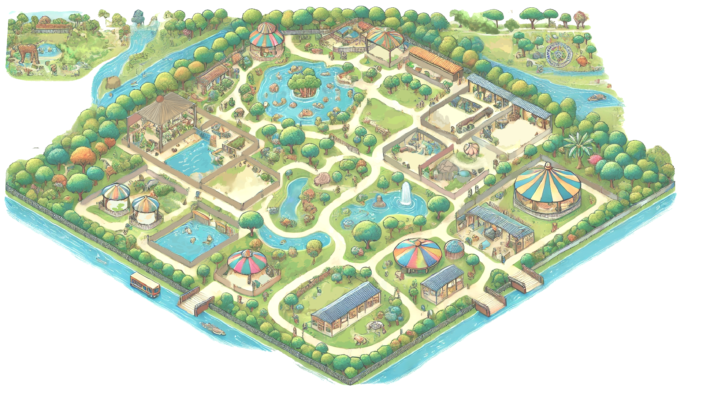
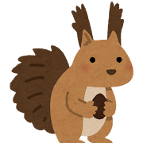
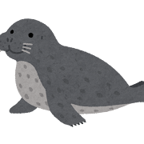
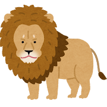
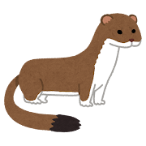
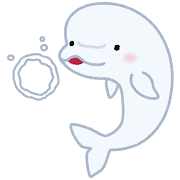
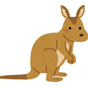
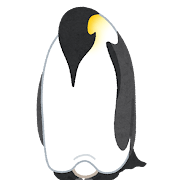

浣熊
浣熊（学名：Procyon lotor）：浣熊属哺乳纲食肉目浣熊科的一种动物。源自北美洲。前爪上有一层角质层，有时候需要浸在水里使其软化来提高灵敏度，所以看起来就像是把食物或者其他物品清洗干净，故名浣熊。

松鼠
松鼠：松鼠科（学名：Sciuridae），是哺乳纲啮齿目一个科，其下包括松鼠亚科（Sciurinae）和非洲地松鼠亚科（Xerinae），特征是长著毛茸茸的长尾巴。本科和与其亲缘关系接近的动物组成松鼠形亚目（Sciuromorpha）。

点斑海豹
海豹：俗称海豹或真海豹，是食肉目鳍足类的一科。海豹是成纺锤体型、四肢特化成鳍状的哺乳类动物。它们头圆颈短，没有外耳廓，因其脸部长的像豹而得名。常见的海豹有斑海豹、港海豹、冠海豹等。
海豹在两个半球的海洋中都有分布，除了较热带的僧海豹外，大多局限于极地、亚极地和温带气候。贝加尔海豹是唯一一种纯淡水海豹。

无角绵羊
绵羊：绵羊（学名：Ovis aries）亦称为家羊或白羊，属哺乳纲偶蹄目牛科羊亚科，是一种四足反刍哺乳动物，也是世界上数量最多的羊种，共计超过十亿。
大部分人类居住的地方都进行过牧羊，这也是许多文明的基本要素。现在为澳洲、新西兰、南美洲中部及南部，以及不列颠群岛的重要产业之一。

长颈鹿
长颈鹿：长颈鹿 （学名：Giraffa），又称麒麟鹿，是哺乳动物偶蹄目下一个属，栖居于非洲，是世界上最高的哺乳动物。通常认为，该属目前仅由一个物种组成，仅存的努比亚长颈鹿（Giraffa camelopardalis）为该物种的模式种，为濒危野生动植物种国际贸易公约附录II所列的保护动物。但若使用不同方法去分析的话，现存的长颈鹿可以细分为一至八个物种不等。此外，人们目前还发现了七种已灭绝的长颈鹿的化石。

小熊猫
小熊猫：小熊猫属（学名：Ailurus），也叫红熊猫、红猫熊或九节狼、火狐，是一种小型哺乳动物，原产于中国西南地区[1]。小熊猫有着红褐色的皮毛和长而蓬松的尾巴，且由于前肢较短，所以步态摇摆蹒跚。小熊猫体型比家猫略大，躯干更长且体重较重。它是一种树栖运动动物，主要以竹笋为主食，但也会杂食禽蛋、鸟类、昆虫和小型哺乳动物。在野外自然条件下它是一种独居动物，黄昏到黎明是其主要活动期，而白天大部分时间处于静栖状态。

狮子
狮（学名：Panthera leo）俗称狮子[4][5][6][7]，是一种产自非洲和亚洲的大型猫科动物，栖息于热带草原、半沙漠地带、较稀疏的旱林与灌木丛等生境。体呈暗黄色，尾端具棕黑色丛毛，成年雄性的脖颈到脸周有黄褐色及黑色长毛环绕，为其显著特征。狮子拥有现存猫科中最大的平均体重和仅次于虎的极限体重，一般野生成年雌狮重110–150千克，雄狮重160–200千克，最大的雄狮可超过270千克，圈养下则能达到300千克以上。

鹿
鹿是偶蹄目反刍亚目中的一类区别于牛、羊等的动物。在不同情况下，鹿的概念的外延广狭多有不同：
《中国大百科全书》依照动物分类学进行定义，释鹿为“偶蹄目鹿科动物的统称”。《现代汉语词典》也定义到科。
动物学专著《中国鹿类动物》把鹿类动物定义为“反刍亚目的鹿上科，包括麝科和鹿科动物”，定义到总科。
汉语的基本范畴中，鹿的外延则较广，鼷鹿和长颈鹿等也被包括在内，相当于反刍亚目内牛科和叉角羚科之外的所有动物的统称。

白鼬
白鼬（学名：Mustela erminea）为鼬科鼬属的一种动物。
特征
形似黄鼬，身体细长，四肢短小；体长25～35厘米，尾长6～10厘米；毛色随季节不同，夏季毛色背部为灰棕色，腹部为白色，足背为灰白色；冬季毛色除了尾端黑色，全身纯白。

狼
狼（学名：Canis lupus）又称豺狼、灰狼、灰豺狗等[4]，哺乳纲，犬科，与狗为同一物种，为现生犬科动物中体型最大的物种。狼曾是地球上分布地区最广的哺乳动物，包括北美和欧亚大陆，但如今在西欧、墨西哥与美国大部分地区已然绝迹。它们主要栖息在荒野或偏远地区，但并不限于此。由于狼对人类及其圈养牲畜的威胁，栖息地曾遭到大量的破坏，现其栖息地已经缩减了三分之一。

大耳狐
大耳狐（学名：Otocyon megalotis），又称蝠耳狐、好望狐。是生活在非洲草原上的犬科动物，因其耳朵巨大而得名。大耳狐体毛为黄褐色，耳、腿和脸的一部分为黑色。体长为55厘米，体重3-4.5公斤，耳长达到13厘米，是大耳狐属唯一的一种。

白鲸
白鲸（学名：Delphinapterus leucas），又称贝鲁卡鲸，为一角鲸科白鲸属的唯一物种，以多变化的叫声与丰富的脸部表情闻名，早期的捕鲸者称之为“海中金丝雀”。白鲸广泛分布于北极与亚北极地区，自古以来它们一直是北极地区人类社会的重要商品，为当地原住民提供了食物、燃油、皮革等物资。它们的活力与适应力、特殊的外貌、易受吸引的天性、以及可接受训练等因素，使其成为海洋世界的明星之一。几个白鲸集中的地区已成为赏鲸圣地，包括加拿大东部的圣劳伦斯河下游与哈德逊湾西部的丘吉尔河河口。白鲸的潜水能力相当强，对于北极的浮冰环境有很好的适应力。

袋鼠
袋鼠（英语：kangaroo，/ˌkæŋɡəˈruː/）是一类有袋类动物，属于袋鼠科（Macropodidae，意思是大脚）。“袋鼠”一词通常指袋鼠科中体型最大的四个物种，分别为红大袋鼠、东部灰大袋鼠、西部灰袋鼠及羚大袋鼠。[2]袋鼠为澳大利亚和新几内亚的本土动物。根据澳大利亚政府统计显示，2019年澳大利亚新南威尔士、昆士兰、南澳大利亚和西澳大利亚四个主要经济区域共生活着4280万只袋鼠，低于2013年的5320万只。

骆驼
骆驼属（学名：Camelus）通称骆驼，是一种偶蹄目骆驼科的动物，主要有单峰骆驼和双峰骆驼两种，多见于沙漠地带。因其在沙漠以及酷暑、严寒等恶劣自然环境下仍能良好生存的生理特点，沙漠边缘的居民早在公元前30000年左右便开始驯养骆驼作为役畜，以供在沙漠和极端气候之中驮运货物和骑乘。历史上从古至今有许多国家都存在倚赖骆驼为生的骆驼牧民，甚至有骑兵使用骆驼作军事用途，也因此骆驼素有“沙漠之舟”的美称。在文化层面上，骆驼常被作为坚忍、适应力强、任劳任怨和不畏艰险的象征，多以褒义形象出现在各类艺术作品中。汉语“骆驼”一词是外来词，来自匈奴[4]。

皇帝企鹅
帝企鹅（台湾作皇帝企鹅，学名：Aptenodytes forsteri）是企鹅科中体型最大的物种[1]，成年帝企鹅身高可达120厘米，体重可达46千克。在帝企鹅发现之前，有一种企鹅被认为是最大的企鹅，取名为王企鹅。后来，在南极大陆沿海帝企鹅被发现，由于它比王企鹅还高大，因此命名为帝企鹅[2]。
公帝企鹅双腿和腹部下方之间有一块布满血管的紫色皮肤的孵卵斑，能让蛋在环境温度低达摄氏零下117度的低温中保持在舒适的摄氏36度，小帝企鹅身上的浅灰白色绒羽可御寒防风，但不防水，防水的翎羽要等到它们快成年时才会长出，慢慢替换身上的绒羽，身体下方的绒羽会先掉。